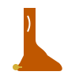

Two Worlds, One Heart
From the Gardens of Karnataka
Shruti's roots run deep in the vibrant culture of Karnataka. Surrounded by the scent of jasmine, the rhythmic beats of traditional drums, and the rich heritage of silk and gold.

To the Heart of Hill Country
Michael was raised under the wide, starry skies of Texas. A world of barbecue, country music, rugged landscapes, and warm Southern hospitality.
"Fate brought a techie from India and an architect from Texas together at a local coffee shop. Now, we're blending our lives and our families in a celebration of love, spice, and everything nice."